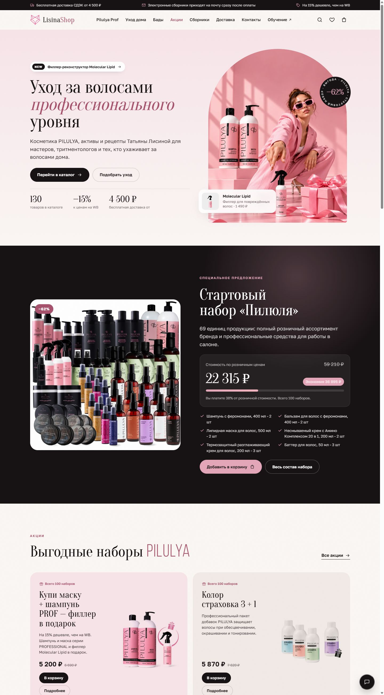
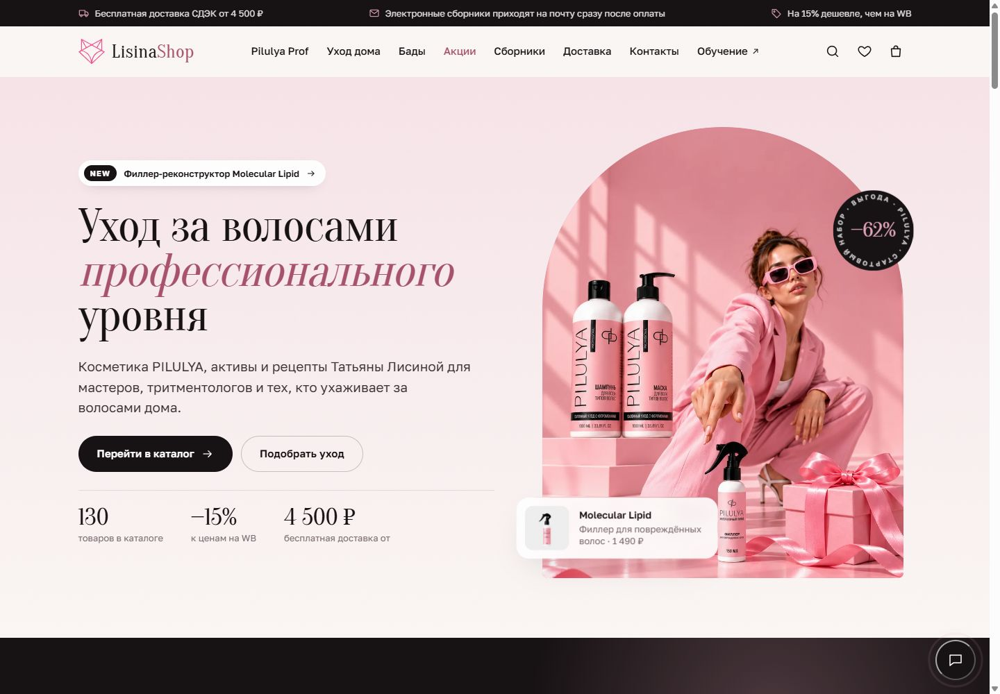
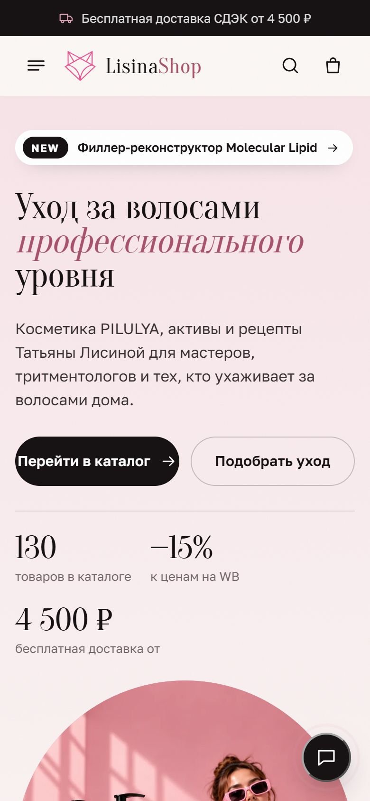

Проект 01 · клиент
2026
LisinaShop
Интернет-магазин косметики PILULYA для волос, активов для уходовой косметики и авторских сборников рецептов. Перенесли его с Tilda на свой код вместе с оплатой и доставкой СДЭК. Позиции в поиске сохранились.
Это настоящий сайт, а не картинка. Можно листать каталог, открывать товары и класть их в корзину.
Задача
Магазин жил на Tilda: 130 товаров, варианты, остатки, электронные сборники. Его нужно было перенести на собственный код с премиальным дизайном, своей оплатой и доставкой.
Главное условие: не потерять позиции в поиске и не сломать ни одной ссылки.
Что сделали
Перенесли каталог автоматически
Скрипт импорта забирает из Tilda все 130 товаров с артикулами, остатками, весом, вариантами и порядком на полках.
Сохранили каждый адрес
Разделы и карточки товаров открываются по тем же URL, что и на Tilda. Редиректы не понадобились вообще.
Отдали поисковикам готовые страницы
Для каждого раздела и товара собирается HTML с title, description, canonical, Open Graph и разметкой Product. Плюс sitemap, robots и страница 404.
Написали сервер заказов
Цены, скидки и доставка считаются только на сервере. ЮKassa с онлайн-чеком, оплата перепроверяется запросом в ЮKassa, защита от подмены суммы и повторных уведомлений.
Подключили СДЭК и Telegram
Подсказки городов, пункты выдачи, расчёт доставки по API СДЭК. Заказы и заявки прилетают менеджеру в Telegram, покупатель получает письмо, а электронные сборники выдаются сразу после оплаты.
Итог
130
товаров перенесены автоматически, обновляются одной командой
0
редиректов: старые ссылки и позиции в поиске остались на месте
18тестов
на оплату, чеки и доставку + сквозной прогон в браузере



Следующий проект
ЛисДаПёс VPN